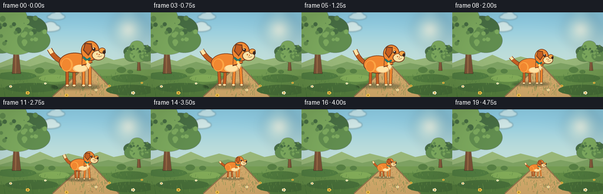
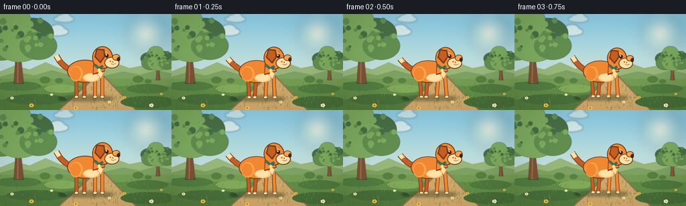

CODING AGENTS AS PIXEL WORLD MODELS
traex/DeepSeek-V4.1-Flash · instance_preservation_0048
点击播放 · 原生 RGB 像素
逐轮保存的候选
回放视频、检查图与代码变化。
每份候选均可单独播放。实际图片检查记录在下方工具轨迹中。
候选 01播放与检查图
点击播放 · 原生 RGB 像素

展开代码变化
--- 上一保存版本
+++ 本次保存版本
@@ -0,0 +1,443 @@
+from __future__ import annotations
+
+import math
+from pathlib import Path
+
+import cv2
+import numpy as np
+from PIL import Image, ImageDraw, ImageFilter
+
+import artifact_io
+
+
+W, H = 256, 144
+SS = 4
+FPS = 4
+N_FRAMES = 20
+
+
+def srgb(hex_color: str, alpha: int = 255) -> tuple[int, int, int, int]:
+ value = hex_color.lstrip("#")
+ return (
+ int(value[0:2], 16),
+ int(value[2:4], 16),
+ int(value[4:6], 16),
+ alpha,
+ )
+
+
+def smoothstep(x: float) -> float:
+ return x * x * (3.0 - 2.0 * x)
+
+
+def bezier(points: list[tuple[float, float]], steps: int = 32) -> list[tuple[float, float]]:
+ out: list[tuple[float, float]] = []
+ for i in range(steps + 1):
+ t = i / steps
+ p = list(points)
+ while len(p) > 1:
+ p = [
+ ((1.0 - t) * a[0] + t * b[0], (1.0 - t) * a[1] + t * b[1])
+ for a, b in zip(p[:-1], p[1:])
+ ]
+ out.append(p[0])
+ return out
+
+
+def gradient_background() -> Image.Image:
+ small = Image.new("RGB", (1, H * SS))
+ px = np.asarray(small).copy()
+ top = np.array(srgb("#86c7e8")[:3], dtype=float)
+ middle = np.array(srgb("#b9dce2")[:3], dtype=float)
+ horizon = np.array(srgb("#f4dfb8")[:3], dtype=float)
+ for y in range(H * SS):
+ t = y / (H * SS - 1)
+ if t < 0.58:
+ f = smoothstep(t / 0.58)
+ color = top * (1.0 - f) + middle * f
+ else:
+ f = smoothstep((t - 0.58) / 0.42)
+ color = middle * (1.0 - f) + horizon * f
+ px[y, 0] = color.astype(np.uint8)
+ return Image.fromarray(px, "RGB").resize((W * SS, H * SS), Image.Resampling.BILINEAR).convert("RGBA")
+
+
+def add_sun(img: Image.Image) -> None:
+ glow = Image.new("RGBA", img.size, (0, 0, 0, 0))
+ draw = ImageDraw.Draw(glow)
+ cx, cy = 218 * SS, 29 * SS
+ for radius, color, alpha in [
+ (31, "#fff1c4", 22),
+ (22, "#fff5d5", 40),
+ (13, "#fff9e8", 105),
+ (7, "#fffdf1", 230),
+ ]:
+ r = radius * SS
+ draw.ellipse((cx - r, cy - r, cx + r, cy + r), fill=srgb(color, alpha))
+ glow = glow.filter(ImageFilter.GaussianBlur(7 * SS))
+ img.alpha_composite(glow)
+
+
+def add_cloud(img: Image.Image, x: float, y: float, scale: float, alpha: int) -> None:
+ cloud = Image.new("RGBA", img.size, (0, 0, 0, 0))
+ d = ImageDraw.Draw(cloud)
+ puffs = [
+ (-22, 2, 15, 8),
+ (-10, -4, 16, 11),
+ (5, -6, 19, 13),
+ (20, 1, 15, 9),
+ (2, 4, 30, 9),
+ ]
+ for px, py, rx, ry in puffs:
+ box = (
+ (x + px - rx) * SS * scale,
+ (y + py - ry) * SS * scale,
+ (x + px + rx) * SS * scale,
+ (y + py + ry) * SS * scale,
+ )
+ d.ellipse(box, fill=srgb("#fffdf5", alpha))
+ cloud = cloud.filter(ImageFilter.GaussianBlur(1.1 * SS))
+ img.alpha_composite(cloud)
+
+
+def draw_tree(img: Image.Image, x: float, ground_y: float, scale: float) -> None:
+ layer = Image.new("RGBA", img.size, (0, 0, 0, 0))
+ d = ImageDraw.Draw(layer)
+ trunk = srgb("#765138")
+ trunk_light = srgb("#936a48")
+ dark = srgb("#456d46")
+ mid = srgb("#5e8c52")
+ light = srgb("#79a962")
+
+ def box(x1: float, y1: float, x2: float, y2: float) -> tuple[float, float, float, float]:
+ return x1 * SS, y1 * SS, x2 * SS, y2 * SS
+
+ # A gently leaning trunk gives the tree some character.
+ trunk_poly = [
+ ((x - 7 * scale) * SS, ground_y * SS),
+ ((x - 3.5 * scale) * SS, (ground_y - 54 * scale) * SS),
+ ((x + 1.5 * scale) * SS, (ground_y - 54 * scale) * SS),
+ ((x + 7 * scale) * SS, ground_y * SS),
+ ]
+ d.polygon(trunk_poly, fill=trunk)
+ d.line(
+ [
+ ((x - 1.5 * scale) * SS, ground_y * SS),
+ ((x - 0.8 * scale) * SS, (ground_y - 50 * scale) * SS),
+ ],
+ fill=trunk_light,
+ width=max(1, round(2.2 * SS * scale)),
+ )
+
+ canopy = [
+ (-30, -70, 27, 20, dark),
+ (-7, -79, 32, 24, mid),
+ (21, -72, 29, 22, dark),
+ (-25, -55, 29, 22, mid),
+ (1, -57, 35, 26, light),
+ (28, -54, 27, 20, mid),
+ (-7, -93, 24, 17, light),
+ ]
+ for ox, oy, rx, ry, color in canopy:
+ d.ellipse(
+ box(x + (ox - rx) * scale, ground_y + (oy - ry) * scale,
+ x + (ox + rx) * scale, ground_y + (oy + ry) * scale),
+ fill=color,
+ )
+
+ # Small leaf clusters break up the otherwise clean silhouette.
+ rng = np.random.default_rng(7)
+ for _ in range(44):
+ ox = float(rng.uniform(-45, 48)) * scale
+ oy = float(rng.uniform(-91, -47)) * scale
+ if (ox / (45 * scale)) ** 2 + ((oy + 69 * scale) / (27 * scale)) ** 2 > 1.1:
+ continue
+ rr = float(rng.uniform(2.0, 5.2)) * scale
+ color = (dark, mid, light)[int(rng.integers(0, 3))]
+ d.ellipse(
+ ((x + ox - rr) * SS, (ground_y + oy - rr) * SS,
+ (x + ox + rr) * SS, (ground_y + oy + rr) * SS),
+ fill=color,
+ )
+ layer = layer.filter(ImageFilter.GaussianBlur(0.32 * SS))
+ img.alpha_composite(layer)
+
+
+def draw_background(frame_index: int) -> Image.Image:
+ img = gradient_background()
+ add_sun(img)
+ cloud_drift = frame_index * 0.16
+ add_cloud(img, 46 + cloud_drift, 32, 0.80, 175)
+ add_cloud(img, 154 + cloud_drift * 0.55, 48, 0.54, 128)
+ add_cloud(img, 228 - cloud_drift * 0.30, 17, 0.42, 105)
+
+ d = ImageDraw.Draw(img)
+
+ # Layered distant hills and a soft tree line establish depth.
+ far_hills = [
+ (0, 86), (22, 77), (44, 83), (68, 72), (91, 82), (116, 75),
+ (144, 82), (169, 72), (193, 81), (218, 76), (240, 83), (256, 78),
+ (256, 107), (0, 107),
+ ]
+ d.polygon([(x * SS, y * SS) for x, y in far_hills], fill=srgb("#93b57d"))
+ near_hills = [
+ (0, 94), (25, 87), (51, 92), (77, 84), (103, 91), (131, 85),
+ (157, 92), (184, 86), (209, 91), (234, 84), (256, 89),
+ (256, 112), (0, 112),
+ ]
+ d.polygon([(x * SS, y * SS) for x, y in near_hills], fill=srgb("#79a066"))
+
+ # Midground meadow.
+ d.rectangle((0, 97 * SS, W * SS, H * SS), fill=srgb("#6f9a55"))
+ d.rectangle((0, 108 * SS, W * SS, H * SS), fill=srgb("#5f8b49"))
+ d.rectangle((0, 128 * SS, W * SS, H * SS), fill=srgb("#507b3f"))
+
+ # Path narrows toward the horizon, visually motivating the dog's receding walk.
+ path = [
+ (145 * SS, 91 * SS),
+ (154 * SS, 91 * SS),
+ (202 * SS, 144 * SS),
+ (89 * SS, 144 * SS),
+ ]
+ d.polygon(path, fill=srgb("#c9a66d"))
+ d.line([(145 * SS, 92 * SS), (89 * SS, 143 * SS)], fill=srgb("#8e724e"), width=2 * SS)
+ d.line([(154 * SS, 92 * SS), (202 * SS, 143 * SS)], fill=srgb("#8e724e"), width=2 * SS)
+
+ # Path texture, placed in perspective bands.
+ rng = np.random.default_rng(21)
+ for _ in range(110):
+ y = float(rng.uniform(95, 142))
+ center = 149.5 + (y - 91) * 0.24
+ half = 3.0 + (y - 91) * 0.75
+ x = float(rng.uniform(center - half * 0.85, center + half * 0.85))
+ rx = float(rng.uniform(0.35, 1.3)) * (0.55 + (y - 91) / 55)
+ ry = rx * float(rng.uniform(0.25, 0.55))
+ tone = ("#b79360", "#d7b77e", "#aa8959")[int(rng.integers(0, 3))]
+ d.ellipse(((x - rx) * SS, (y - ry) * SS, (x + rx) * SS, (y + ry) * SS), fill=srgb(tone, 170))
+
+ # Low meadow patches and soft shadows.
+ for cx, cy, rx, ry, color in [
+ (27, 108, 34, 7, "#4e7c43"),
+ (92, 112, 26, 6, "#7da95b"),
+ (220, 112, 31, 7, "#4d7940"),
+ (54, 128, 45, 8, "#466f3c"),
+ (222, 132, 42, 9, "#456d3a"),
+ ]:
+ d.ellipse(
+ ((cx - rx) * SS, (cy - ry) * SS, (cx + rx) * SS, (cy + ry) * SS),
+ fill=srgb(color, 100),
+ )
+
+ draw_tree(img, 28, 104, 1.04)
+ draw_tree(img, 236, 99, 0.46)
+
+ # Background shrubs help the tiny far dog remain readable against the meadow.
+ for x, y, r in [(67, 99, 8), (88, 100, 6), (206, 98, 8), (221, 101, 5)]:
+ d.ellipse(((x - r) * SS, (y - r * 0.65) * SS,
+ (x + r) * SS, (y + r * 0.65) * SS), fill=srgb("#547f46"))
+
+ return img
+
+
+def add_grass_and_flowers(img: Image.Image, frame_index: int) -> None:
+ layer = Image.new("RGBA", img.size, (0, 0, 0, 0))
+ d = ImageDraw.Draw(layer)
+ rng = np.random.default_rng(93)
+ sway = math.sin(frame_index / N_FRAMES * math.tau) * 0.45
+ for _ in range(210):
+ x = float(rng.uniform(0, W))
+ base_y = float(rng.uniform(103, 145))
+ depth = (base_y - 100) / 44
+ height = float(rng.uniform(1.8, 6.5)) * (0.45 + depth)
+ lean = float(rng.uniform(-1.4, 1.4)) + sway * depth
+ color = ("#3e6d39", "#4e7f40", "#6c974e")[int(rng.integers(0, 3))]
+ d.line(
+ [(x * SS, base_y * SS), ((x + lean) * SS, (base_y - height) * SS)],
+ fill=srgb(color, 210),
+ width=max(1, round(0.55 * SS)),
+ )
+
+ # A handful of daisies and yellow flowers in the foreground.
+ for x, y, r, kind in [
+ (18, 126, 1.6, "white"), (47, 137, 2.2, "yellow"),
+ (77, 121, 1.3, "white"), (186, 125, 1.5, "yellow"),
+ (226, 137, 2.1, "white"), (241, 120, 1.3, "yellow"),
+ (113, 141, 2.0, "yellow"), (163, 132, 1.4, "white"),
+ ]:
+ petal = "#fff7dc" if kind == "white" else "#f2c84c"
+ center = "#e7b536" if kind == "white" else "#9f7527"
+ d.line([(x * SS, (y + r) * SS), (x * SS, (y + r * 4.0) * SS)],
+ fill=srgb("#47753b"), width=max(1, round(0.6 * SS)))
+ for k in range(5):
+ a = k * math.tau / 5
+ px = x + math.cos(a) * r
+ py = y + math.sin(a) * r * 0.70
+ d.ellipse(((px - r * 0.65) * SS, (py - r * 0.65) * SS,
+ (px + r * 0.65) * SS, (py + r * 0.65) * SS), fill=srgb(petal))
+ d.ellipse(((x - r * 0.55) * SS, (y - r * 0.55) * SS,
+ (x + r * 0.55) * SS, (y + r * 0.55) * SS), fill=srgb(center))
+
+ img.alpha_composite(layer)
+
+
+def draw_dog(img: Image.Image, frame_index: int) -> None:
+ u = frame_index / (N_FRAMES - 1)
+ ease = smoothstep(u)
+ scale = 1.0 - 0.62 * ease
+ cx = 129.0 + 12.0 * ease
+ ground_y = 126.5 - 11.0 * ease
+ walk_phase = u * math.tau * 2.25
+ bob = math.sin(walk_phase * 2.0) * 0.45 * scale
+
+ layer = Image.new("RGBA", img.size, (0, 0, 0, 0))
+ d = ImageDraw.Draw(layer)
+
+ unit = scale * 1.07
+ outline = srgb("#713d22")
+ orange = srgb("#e98632")
+ orange_dark = srgb("#bd5d22")
+ orange_light = srgb("#f3a447")
+ cream = srgb("#ffe0aa")
+ cream_shadow = srgb("#edc185")
+ collar = srgb("#257f78")
+ collar_dark = srgb("#185d59")
+
+ def pt(x: float, y: float) -> tuple[float, float]:
+ return ((cx + (x - 50.0) * unit) * SS,
+ (ground_y - (100.0 - y) * unit + bob) * SS)
+
+ def box(x1: float, y1: float, x2: float, y2: float) -> tuple[float, float, float, float]:
+ a = pt(x1, y1)
+ b = pt(x2, y2)
+ return a[0], a[1], b[0], b[1]
+
+ line_width = max(2, round(1.15 * SS))
+ detail_width = max(1, round(0.70 * SS))
+
+ # Contact shadow follows the dog but remains soft at small sizes.
+ shadow = Image.new("RGBA", img.size, (0, 0, 0, 0))
+ sd = ImageDraw.Draw(shadow)
+ sx, sy = pt(50, 100)
+ sw = 39 * unit * SS
+ sh = max(1.6 * SS, 4.3 * unit * SS)
+ sd.ellipse((sx - sw, sy - sh, sx + sw, sy + sh), fill=srgb("#253f2c", 105))
+ shadow = shadow.filter(ImageFilter.GaussianBlur(max(1.0, 1.8 * SS * scale)))
+ img.alpha_composite(shadow)
+
+ # Tail: a curved plume with a cream tip, wagging a little as the dog walks.
+ wag = math.sin(walk_phase * 1.35) * 4.2
+ tail = bezier([(31, 61), (20, 58), (12, 48 + wag * 0.25), (8, 40 + wag)], 22)
+ tail_px = [pt(x, y) for x, y in tail]
+ d.line(tail_px, fill=outline, width=round(8.5 * unit * SS), joint="curve")
+ d.line(tail_px, fill=orange_dark, width=round(6.5 * unit * SS), joint="curve")
+ tip = [pt(x, y) for x, y in tail[-7:]]
+ d.line(tip, fill=cream, width=round(6.0 * unit * SS), joint="curve")
+
+ # Rear and front legs alternate subtly to suggest a short walk.
+ leg_swing = math.sin(walk_phase) * 2.0
+ for x, phase, back in [(36, 0.0, True), (47, math.pi, True), (62, math.pi, False), (72, 0.0, False)]:
+ swing = math.sin(walk_phase + phase) * 2.2
+ top_y = 68 if back else 69
+ knee_y = 82
+ paw_y = 98.5
+ leg_color = orange_dark if back else orange
+ d.line([pt(x, top_y), pt(x + swing * 0.4, knee_y), pt(x + swing, paw_y)],
+ fill=outline, width=round(5.4 * unit * SS), joint="curve")
+ d.line([pt(x, top_y), pt(x + swing * 0.4, knee_y), pt(x + swing, paw_y)],
+ fill=leg_color, width=round(3.8 * unit * SS), joint="curve")
+ d.ellipse(box(x + swing - 3.0, 96.5, x + swing + 3.2, 100.0), fill=outline)
+ d.ellipse(box(x + swing - 2.3, 96.7, x + swing + 2.5, 99.5), fill=cream)
+
+ # Body and haunch.
+ d.ellipse(box(23, 46, 73, 78), fill=outline)
+ d.ellipse(box(24.2, 47.0, 71.8, 76.7), fill=orange)
+ d.ellipse(box(26.5, 54.5, 45.0, 76.0), fill=orange_light)
+ d.ellipse(box(27.5, 56.0, 42.0, 74.5), fill=orange)
+ d.ellipse(box(45, 65, 68, 77), fill=cream_shadow)
+ d.ellipse(box(47, 65, 67, 75.5), fill=cream)
+
+ # Neck and head.
+ d.polygon([pt(60, 46), pt(72, 43), pt(76, 62), pt(59, 67)], fill=outline)
+ d.polygon([pt(61, 47), pt(71, 44), pt(75, 61), pt(60, 65)], fill=orange)
+ d.ellipse(box(58, 27, 87, 59), fill=outline)
+ d.ellipse(box(59.3, 28.2, 85.6, 57.6), fill=orange)
+ d.ellipse(box(61, 30, 80, 45), fill=orange_light)
+
+ # Floppy ear, slightly lifted by the walk.
+ ear_lift = math.sin(walk_phase + 0.8) * 1.0
+ ear = [pt(64, 30), pt(75, 31), pt(76 + ear_lift, 41), pt(69 + ear_lift, 51), pt(61, 42)]
+ d.polygon(ear, fill=outline)
+ ear_inner = [pt(65.5, 32), pt(73.3, 33), pt(73.8 + ear_lift, 41), pt(68.5 + ear_lift, 48), pt(63.0, 41)]
+ d.polygon(ear_inner, fill=orange_dark)
+
+ # Cream muzzle and dark nose create a clear dog profile.
+ d.ellipse(box(75, 42, 96, 58), fill=outline)
+ d.ellipse(box(76.2, 43.1, 94.7, 56.8), fill=cream)
+ d.ellipse(box(86, 38, 97, 47), fill=outline)
+ d.ellipse(box(87, 39, 96, 46), fill=orange_light)
+ d.ellipse(box(92.5, 42.0, 97.0, 48.0), fill=srgb("#38251d"))
+ d.ellipse(box(93.0, 42.6, 94.0, 43.7), fill=srgb("#8c6e5d"))
+ d.line([pt(91, 51), pt(87.5, 52.5), pt(84.5, 51.5)], fill=outline, width=detail_width, joint="curve")
+
+ # Eye, brow, collar, and tag.
+ d.ellipse(box(76.0, 37.4, 81.0, 43.0), fill=srgb("#35231c"))
+ d.ellipse(box(77.0, 38.0, 78.7, 40.0), fill=srgb("#fffdf4"))
+ d.line([pt(73.0, 34.2), pt(77.0, 33.2), pt(80.2, 35.0)],
+ fill=orange_dark, width=detail_width, joint="curve")
+
+ d.line([pt(61.5, 53.0), pt(67.5, 58.0), pt(73.0, 54.5)],
+ fill=collar_dark, width=round(3.5 * unit * SS), joint="curve")
+ d.line([pt(61.5, 53.0), pt(67.5, 58.0), pt(73.0, 54.5)],
+ fill=collar, width=round(2.2 * unit * SS), joint="curve")
+ d.ellipse(box(65.5, 58.0, 70.0, 63.2), fill=srgb("#f4c34b"))
+ d.ellipse(box(66.4, 58.8, 69.1, 61.8), fill=srgb("#ffe58b"))
+
+ # A small cream chest tuft and two freckles retain identity at every scale.
+ d.polygon([pt(68, 61), pt(73, 64), pt(70, 72), pt(66, 66)], fill=cream)
+ d.ellipse(box(82.5, 47.0, 84.2, 49.0), fill=orange_dark)
+ d.ellipse(box(86.0, 48.0, 87.4, 49.8), fill=orange_dark)
+
+ img.alpha_composite(layer)
+
+
+def render_frame(frame_index: int) -> np.ndarray:
+ img = draw_background(frame_index)
+ add_grass_and_flowers(img, frame_index)
+ draw_dog(img, frame_index)
+
+ # Gentle warm grade and vignette keep the scene cohesive without hiding detail.
+ arr = np.asarray(img.convert("RGB"), dtype=np.float32) / 255.0
+ arr = np.clip(arr * np.array([1.035, 1.008, 0.965], dtype=np.float32), 0.0, 1.0)
+ yy, xx = np.mgrid[0:H * SS, 0:W * SS]
+ nx = (xx / (W * SS - 1) - 0.5) * 2.0
+ ny = (yy / (H * SS - 1) - 0.5) * 2.0
+ vignette = 1.0 - 0.10 * np.clip((nx * nx * 0.72 + ny * ny * 0.55 - 0.18) / 0.82, 0.0, 1.0)
+ arr *= vignette[..., None]
+ out = Image.fromarray((arr * 255.0 + 0.5).clip(0, 255).astype(np.uint8), "RGB")
+ out = out.resize((W, H), Image.Resampling.LANCZOS)
+ return np.asarray(out, dtype=np.uint8)
+
+
+def main() -> None:
+ case_dir = Path(__file__).resolve().parent
+ frames = np.stack([render_frame(i) for i in range(N_FRAMES)], axis=0)
+ assert frames.shape == (N_FRAMES, H, W, 3), frames.shape
+ assert frames.dtype == np.uint8
+
+ artifact_io.save(frames, case_dir)
+
+ # Also provide a directly playable RGB video alongside the canonical frame tensor.
+ writer = cv2.VideoWriter(
+ str(case_dir / "video.mp4"),
+ cv2.VideoWriter_fourcc(*"mp4v"),
+ FPS,
+ (W, H),
+ )
+ if writer.isOpened():
+ for frame in frames:
+ writer.write(cv2.cvtColor(frame, cv2.COLOR_RGB2BGR))
+ writer.release()
+
+
+if __name__ == "__main__":
+ main()
候选 02播放与检查图
点击播放 · 原生 RGB 像素

展开代码变化
--- 上一保存版本
+++ 本次保存版本
@@ -59,7 +59,7 @@
f = smoothstep((t - 0.58) / 0.42)
color = middle * (1.0 - f) + horizon * f
px[y, 0] = color.astype(np.uint8)
- return Image.fromarray(px, "RGB").resize((W * SS, H * SS), Image.Resampling.BILINEAR).convert("RGBA")
+ return Image.fromarray(px).resize((W * SS, H * SS), Image.Resampling.BILINEAR).convert("RGBA")
def add_sun(img: Image.Image) -> None:
@@ -413,7 +413,7 @@
ny = (yy / (H * SS - 1) - 0.5) * 2.0
vignette = 1.0 - 0.10 * np.clip((nx * nx * 0.72 + ny * ny * 0.55 - 0.18) / 0.82, 0.0, 1.0)
arr *= vignette[..., None]
- out = Image.fromarray((arr * 255.0 + 0.5).clip(0, 255).astype(np.uint8), "RGB")
+ out = Image.fromarray((arr * 255.0 + 0.5).clip(0, 255).astype(np.uint8))
out = out.resize((W, H), Image.Resampling.LANCZOS)
return np.asarray(out, dtype=np.uint8)
可观测工具轨迹
实际执行的命令与返回图片。
命令 1exit 0
/bin/bash -lc "pwd && rg --files -g '"'!**/.git/**'"' | sed -n '1,120p'"
命令 2exit 0
/bin/bash -lc "printf '%s\\n' '--- prompt.txt ---'; sed -n '1,240p' prompt.txt; printf '%s\\n' '--- GENERATION_RULES.md ---'; sed -n '1,260p' GENERATION_RULES.md; printf '%s\\n' '--- task_spec.json ---'; sed -n '1,260p' task_spec.json"
命令 3exit 0
/bin/bash -lc "sed -n '1,260p' artifact_io.py"
命令 4exit 0
/bin/bash -lc "sed -n '1,260p' player_template.html"
命令 5exit 0
/bin/bash -lc "python - <<'PY' import importlib.util for m in ['numpy','PIL','cv2','imageio','matplotlib']: print(m, bool(importlib.util.find_spec(m))) PY"
命令 6exit 1
/bin/bash -lc 'python generate.py'
命令 7exit 0
/bin/bash -lc 'python generate.py'
命令 8exit 0
/bin/bash -lc 'python -m py_compile generate.py && (ffprobe -v error -select_streams v:0 -show_entries stream=width,height,nb_frames,r_frame_rate,codec_name -of default=nw=1 video.mp4 || true)'
命令 9exit 0
/bin/bash -lc "python - <<'PY'
from pathlib import Path
import numpy as np
from PIL import Image
p=Path('.')
z=np.load(p/'pixels.npz')['pixels']
print('pixels shape/dtype:', z.shape, z.dtype)
print('frame PNGs:', len(list((p/'frames').glob('*.png'))))
print('inspection:', Image.open(p/'inspection.png').size)
print('transition:', Image.open(p/'transition_check.png').size)
print('html bytes:', (p/'index.html').stat().st_size)
PY"命令 10exit 0
/bin/bash -lc 'git status --short 2>/dev/null || true; du -h frames pixels.npz index.html video.mp4 inspection.png transition_check.png 2>/dev/null | tail -n 8'
命令 11exit 0
/bin/bash -lc "python - <<'PY'
import cv2
cap=cv2.VideoCapture('video.mp4')
print('video opened:', cap.isOpened())
print('video frames:', int(cap.get(cv2.CAP_PROP_FRAME_COUNT)))
print('video size:', int(cap.get(cv2.CAP_PROP_FRAME_WIDTH)), 'x', int(cap.get(cv2.CAP_PROP_FRAME_HEIGHT)))
print('video fps:', cap.get(cv2.CAP_PROP_FPS))
ok, frame=cap.read()
print('first frame:', ok, None if frame is None else frame.shape)
cap.release()
PY"命令 12exit 0
/bin/bash -lc "python generate.py && python - <<'PY'
import cv2, numpy as np
from pathlib import Path
z=np.load('pixels.npz')['pixels']
assert z.shape == (144,256,20) and z.dtype == np.uint32
assert len(list(Path('frames').glob('*.png'))) == 20
cap=cv2.VideoCapture('video.mp4')
assert cap.isOpened() and int(cap.get(cv2.CAP_PROP_FRAME_COUNT)) == 20
assert int(cap.get(cv2.CAP_PROP_FRAME_WIDTH)) == 256
assert int(cap.get(cv2.CAP_PROP_FRAME_HEIGHT)) == 144
assert abs(cap.get(cv2.CAP_PROP_FPS)-4.0) < 1e-6
cap.release()
print('verified: 20 RGB frames, 256x144, 4 fps, player and MP4 present')
PY"视觉工具实际返回图片 1

视觉工具实际返回图片 2

保存候选 2 份；完成命令 12 次；可验证图片返回 2 张。原始 API 响应与完整日志保留在本地。